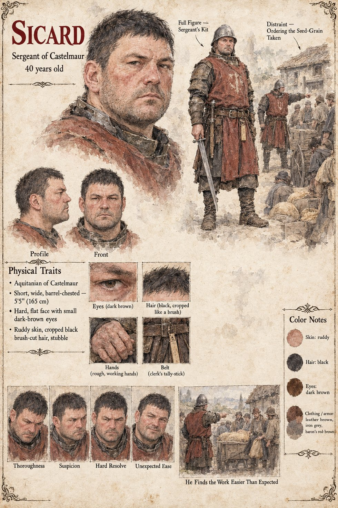

Sicard
Sergeant of Castelmaur, second to the bailiff · thorough, with no particular opinions · about 40 years old by his sheet
The bailiff's second, a short, wide, hard-faced sergeant with a reputation in the barony for thoroughness and no particular opinions. He rides down the lane of Vilarnau on the first of Kerren, a day late because his master, who dislikes the business, has found small administrative reasons to wait, with ten men, a cart and the clerk Folquet. Nine hearths of the east lane are distrained in the forenoon without violence. He finds the work easier than he had expected, grows by degrees expansive, and calls the clerk's attention to the proper form of the entry. At the Mill of the Two Weirs he goes up the ladder with a lantern to the widow's forty measures of seed-grain; when Ermengarda says he will not take them, he answers that it is the lord's due and will be weighed at the castle, and turns his back on her to give an order.
Three of his men are dead in the loft within a dozen heartbeats. The text places him both at the head of them on the ladder and outside holding the horses, arriving at the door too late for anything but the end, and does not reconcile the two. He comes back out white to the lips and tells the clerk that the foreigner has killed the three. By dusk he is at Castelmaur on a lathered horse, in sweat and fear, delivering a report that has passed through three mouths and a ledger: a lie in every particular but the facts, and exactly what the baron most wants to hear. Nothing is said of him afterward. The sheet's forty years, ruddy skin and brush-cut black hair are its own.